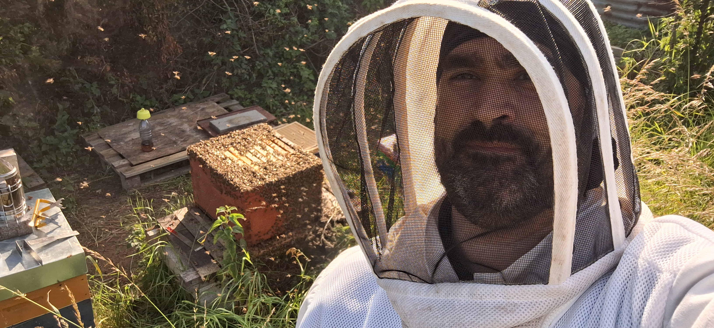

Our Story
Artisan know-how, a passion for bees

La Ruche Gourmande is, above all, M. Salis, a passionate beekeeper working on a small scale near Villerupt, in the heart of the Pays Haut. His apiary was born from a deep attachment to nature and a simple wish: to share authentic honey, produced with patience and respect for the bees' natural rhythm.
Every harvest is the result of artisan work, with no shortcuts or industrial processing. The honey is carefully extracted, jarred on site in Villerupt, and sold directly to people in the area — a short supply chain that keeps a direct link between the producer and those who enjoy his honey.
Beyond honey production, M. Salis pays particular attention to local biodiversity: preserving favourable conditions for bees also means preserving the meadows, orchards and wildflowers of the Pays Haut that give each harvest its richness and aromatic diversity.
It is this artisan rigour and attachment to the local area that La Ruche Gourmande wishes to convey through each of its products — from spring honey to treats, as well as through supporting new beekeepers who wish, in turn, to embark on this adventure.